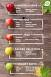
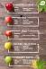

en.wikipedia.com > wiki > Apple

Apple - Wikipedia
An apple is a sweet edible fruit produced by an apple tree (Malus domestica). Apple trees are cultivvated worldwide and are the most widely grown species in the ...
Family: Rosaceae
Genus: Malus
Species: M.domestica
Kingdom: Plantae
www.apple.com > ...
Apple (Australia)
Discover the innovative world of Apple and shop for everything iPhone, iPad, Apple Watch, Mac and Apple TV. Plus explore accessories, entertainment and ...
www.aussieapples.com.au
Aussie Apples – Get your crunch on!
A dense, sweet, aromatic and juicy apple with a white flesh. ... In Australia you can buy crisp and tasty apples all year around because of how apples are stored.
www.medicalnewstoday.com › articles
Apples: Benefits, nutrition, and tips - Medical News Today
Dec 18, 2019 - Apples are a popular fruit, containing antioxidants, vitamins, dietary fiber, and a range of other nutrients. Due to their varied nutrient content, they may help prevent several health conditions. ... For example, they may help reduce the risk of cancer, obesity, heart disease ...
www.aussieapples.com.au › varieties
Varieties – Aussie Apples
Smitten®. An early season apple with a perfect crunch. Its firm flesh makes it more resistant to bruising. A great snack on-the-go.
en.wikipedia.org › wiki › Apple_Inc
Apple Inc. - Wikipedia
Apple Inc. is an American multinational technology company headquartered in Cupertino, California, that designs, develops, and sells consumer electronics, ...
Founders: Steve Jobs; Steve Wozniak; Ronald ...
Number of employees: 137,000 (2019)
Founded: April 1, 1976; 43 years ago
Number of locations: 500+ retail stores (2019)
www.zdnet.com › article › i-just-dumped-one-of-apples-worst-most-b...
I just dumped one of Apple's worst, most beautiful products ...
1 day ago - It all must have seemed like a good idea at the time. But the departure of the business chief responsible for Apple News Plus suggests I was not ...
blog.hellofresh.com.au › How to cook › seasonally
A Guide to Apples; cooking, baking and snacking approved
Some like to think of apples as fruits, but we prefer thinking of them as nature's lollies — the kind you can enjoy without an ounce of guilt. Now that's our kind of ...
www.thefoodcoach.com.au › food
Apples - The Food Coach
Apples - Did you know the way to test the goodness of an apple is to flick it with your fingernail? If it makes a sound similar to flicking a drum the apple will be ...


 
